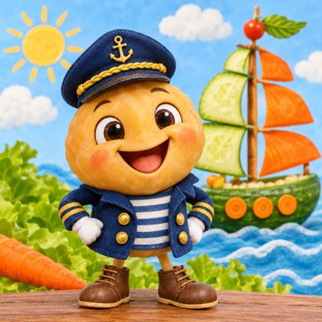

Salt
Hoi, ich bin Salt. Ich bin gründlich und bringe jede Sache zu Ende.
- Typ
- Quality-Bot V 3.5
- Takt
- alle 10 Min.
Skills: 79
Satzrhythmus prüfen, KI-Muster prüfen, Umfluss prüfen, Lesernutzen prüfen, LinkedIn-Bild prüfen
Bild: tanrıca / Pixabay
Wir bauen unsere eigene Seite, mit KI und ganz ohne Kosten
📅 Datum: kommt noch📍 Ort: kommt noch
Erst Video ansehen, dann die Fragen unten ankreuzen.
Tipp: Tippe auf ein Kapitel, dann springt das Video dorthin. Untertitel kannst du im Video ein- und ausschalten.
Anmeldung, Editor, Spracheingabe, Steckbrief-Funktion und Foto-Upload gibt es noch nicht. Im Video zeigen wir, wie es einmal werden soll (Plan).
Hinter der Seite arbeiten drei KI-Helfer: Ihr sagt oder schreibt einen Wunsch, sie bauen die Seite dazu.
Hoi, ich bin Salt. Ich bin gründlich und bringe jede Sache zu Ende.
Skills: 79
Satzrhythmus prüfen, KI-Muster prüfen, Umfluss prüfen, Lesernutzen prüfen, LinkedIn-Bild prüfen
Bild: tanrıca / Pixabay
Hoi, ich bin Pepper. Ich bin flink und bringe dir Antworten sofort.
Skills: 54
Leselinks erneuern, Postfach lesen, Cc-Aufträge annehmen, Launchpad-Ideen melden, Antworten
Bild: olenchic / Pixabay

Hoi, ich bin Chili und tue, was ein Security- und Litigation-Bot so tut. Ich schlafe nie.
Skills: 133
Plagiatssuche, Codesuche, Bildvergleich, Zeitstempel, Wayback-Archiv
Bild: PixelLabs / Pixabay
Alles geht erst nach Freigabe durch das Gremium online.
Ihr könnt die Seite ganz normal von Hand bauen, so wie man es schon immer macht, oder mit Hilfe der KI-Helfer. Beides ist gleich gut. Die Klasse entscheidet, und niemand muss KI benutzen.
KI wird heute auch dort eingesetzt, wo Menschen eingeschränkt sind. Wer die Hände nicht für eine Tastatur nutzen kann, steuert den Computer mit der Stimme. In Pflegeheimen wird KI heute schon ausprobiert und genutzt: zum Sprechen statt Tippen bei der Dokumentation, in Sensoren, die einen Sturz melden, und mit Roboter-Robben, die Menschen mit Demenz beruhigen sollen. Die Ergebnisse sind gemischt, und Fachleute sagen: KI ersetzt keine Pflege, sie kann nur helfen.
Wer mag, probiert die KI als Werkzeug aus. Wer nicht mag, baut von Hand. Ihr bleibt die Autorinnen und Autoren: Die KI macht nur Vorschläge, und das Gremium gibt frei.
Plan: so soll es werden. Diese Funktion gibt es noch nicht, so soll sie einmal aussehen.
Jedes Kind kann von einem anderen Kind beschrieben werden. Es gibt zwei Formen: den Steckbrief mit festen Feldern, in dem nur Positives steht, und das Porträt, einen kurzen, freundlichen Text mit höchstens 120 Wörtern.
Das beschriebene Kind hat immer das letzte Wort. Ohne sein Ja erscheint nichts: Der Text bleibt unsichtbar und wird nach 30 Tagen gelöscht. Und es kann sein Ja später jederzeit zurückziehen.
Beispiel, 17 Jahre, erfundene Figur

Beispiel, 16 Jahre, erfundene Figur
Für die Kleinen (6 bis 8 Jahre), erfundene Figur

Mut zur Lücke ist erlaubt, Mut zum Spaß erwünscht: Reicht witzige, lustige und interessante Seiten ein! Je bunter, desto besser, und alles bleibt freundlich.
Alle in der Klasse sind unter 16. Fotos und Namen kommen nur auf die Seite, wenn die Person selbst und ihre Eltern ausdrücklich zugestimmt haben. Wer nicht möchte, bleibt draußen, und jedes Foto kann jederzeit gelöscht werden.
Im Gratis-Tarif von GitHub ist alles öffentlich: Jede Person im Internet kann die Seite und alle Bilder sehen. Deshalb braucht jedes Foto, auf dem jemand zu erkennen ist, das Einverständnis der Person und der Eltern.
Hier unten gibst du keinen Namen und keine E-Mail-Adresse an. Deine Kreuze sind anonym.
Das ist keine Rechtsberatung. Bei unter 16-Jährigen soll nach der Datenschutz-Grundverordnung die Zustimmung der Eltern vorliegen.
Eure Kreuze bleiben vorerst nur auf diesem Gerät gespeichert. Einen gemeinsamen Sammelpunkt gibt es noch nicht. Die Hausregeln stehen im Flyer (PDF).
0 Fragen beantwortet
Kreuze bitte mindestens eine Antwort an.
Sie bleiben vorerst nur auf diesem Gerät. Ein gemeinsamer Sammelpunkt wird noch eingerichtet.
Dieser Bereich richtet sich an Lehrkräfte, Eltern und die IT der Schule. Er zeigt, wie das Projekt gedacht ist.
Plan, nicht Stand: Das Anmeldeportal, die Steckbrief-Funktion und der Foto-Upload sind geplant und noch nicht gebaut.
Eine solche Seite zu bauen und zu pflegen ist mühsam, und die Arbeit verteilt sich über viele Monate. Große Projekte dieser Art scheitern oft nicht an der Idee, sondern daran, dass niemand die Arbeit mehr gern macht. Die KI nimmt dem Team Fleißarbeit ab, damit die Freude am Projekt bleibt.
Die KI entscheidet nichts. Die Kinder bleiben die Autorinnen und Autoren, das Gremium gibt frei, und Fotos und Namen kommen nur mit Zustimmung des Kindes und der Eltern auf die Seite. Von Hand zu bauen ist gleichwertig, und niemand muss KI benutzen.
| Bereich | von Hand | mit KI |
|---|---|---|
| Gesamt bis Juli 2027 | 100 bis 170 | 20 bis 30 |
| Seite aufbauen | 25 bis 40 | 3 bis 5 |
| Video | 15 bis 30 | 2 bis 3 |
| Fotos | 20 bis 30 | 5 bis 8 |
| Pflege bis Juli | 40 bis 70 | 10 bis 15 |
Grobe Schätzung, keine Zusage.